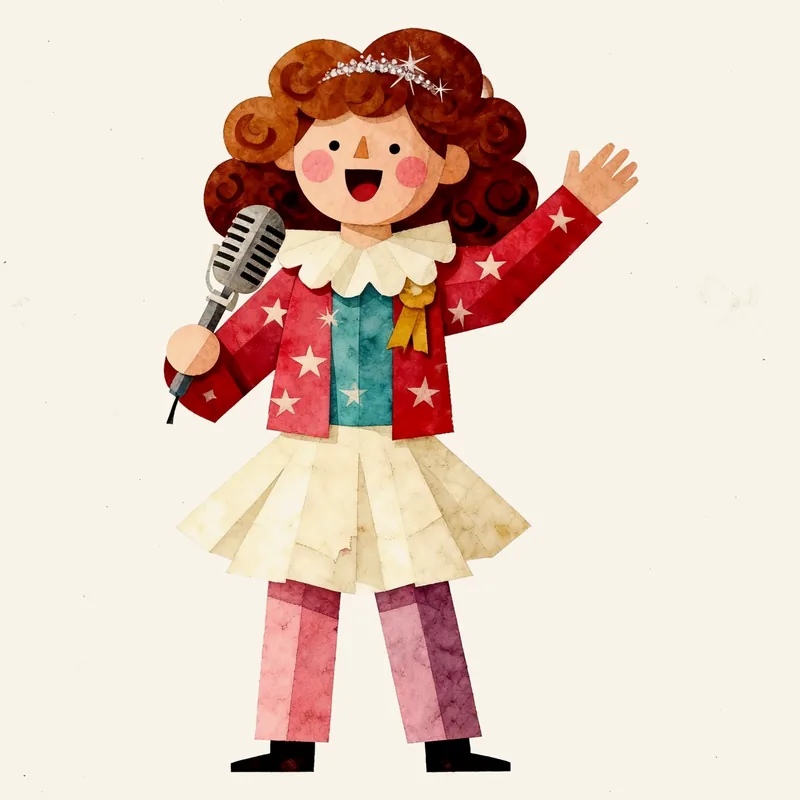

?
16
+
?
?
16
+
?
16TYPE
+
その16タイプ、
生まれつき
ですか？
生年月日の「気質」と、16タイプの「性格」。
2つをくらべて、変わらないところを見る診断
無料
30問から
恋愛・仕事のヒントも
?
気質
性格
16typeplus.jp
16TYPE
+
その16タイプ、
生まれつき
？
それとも、
今の自分
？
?

気質 生年月日から
性格 30問から
2枚くらべると、変わらないところが見える
無料
16TYPE
+
Were you
born
with your 16 type?
Your temperament from your birth date,
your character from the 16 types.
Compare the two and find what stays the same.
Free
From 30 questions
Love & work tips too
?
Temperament
Character
16typeplus.jp/en
16TYPE
+
그 16타입,
타고난
건가요?
생년월일로 보는 ‘기질’과 16타입의 ‘성격’.
둘을 비교해서 변하지 않는 부분을 찾는 테스트
무료
30문항부터
연애·일 힌트도
?
기질
성격
16typeplus.jp/ko
16TYPE
+
Were you
born
with your 16 type?
Or did you
grow into it
?
?
Temperament · birth date
Character · 30 questions
Compare the two cards. See what stays the same.
Free
16TYPE
+
그 16타입,
타고난
걸까요?
아니면
지금의 나
?
?
기질 생년월일로
성격 30문항으로
두 장을 비교하면 변하지 않는 부분이 보여요
무료